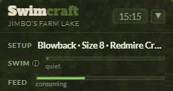
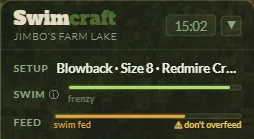
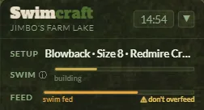
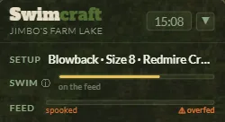
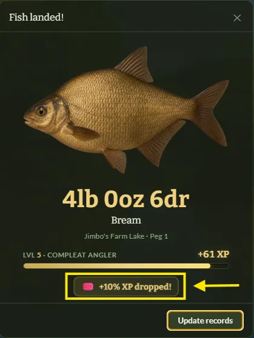
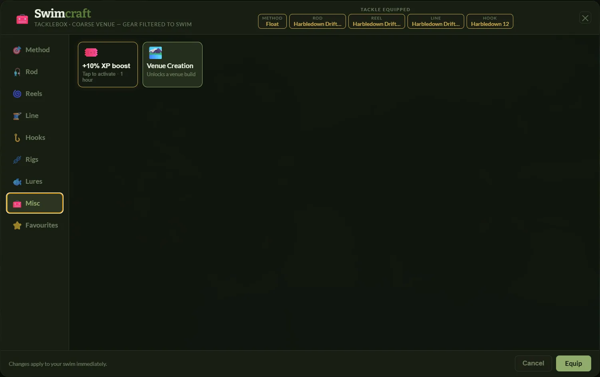
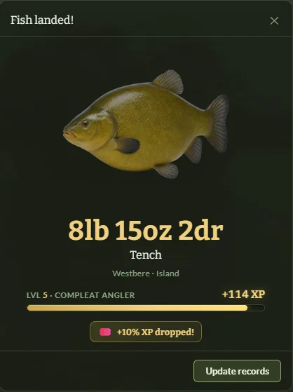

SWIM Confidence
What the bar is telling you
It runs from cold to switched on, and it names where it is:
- quietNothing happening yet. This is where every swim starts.
- buildingBait is down and something is taking notice.
- on the feedFish are competing. Bites come more freely and the stamp starts to lift.
- confidentA properly primed swim. The better fish are now genuinely on the cards.
- frenzyAs hot as it gets. This is where the biggest fish — and the rewards — live.


Feeding is the engine — not catching
Fish in the net build a swim faster than anything else — but bait is what gets them there, and it is the only thing that moves the bar at all when nothing is biting. Neither works without the other: bait with no fishing is slow, and fishing over an empty swim does not produce the fish.
- Any bait in the water holds the swim. While the feed bar is above zero the swim does not slide backwards at all — and it climbs. How fast it climbs depends on how full the bar is, so a bar kept high builds a swim several times faster than one kept low. Both build it.
- Run the bar dry and the swim goes cold quickly. With nothing in the water, confidence bleeds twice as fast as the rate it was climbing at on a full bar. Topping up little and often is what keeps you on the right side of that.
- Your feed washes out in about five minutes on a cold swim, and in about one minute at frenzy.
- And the trap: the hotter the swim gets, the faster your bait goes. More fish, more mouths. A frenzy you stop feeding is a frenzy that ends.
The two rules above pull against each other on purpose. Bait warms the swim, and a warm swim eats the bait faster — so the better the fishing gets, the harder you have to work to keep it there.
But do not pile it in — and the bar tells you
You cannot overfill the swim by accident, because the feed bar warns you first. It reads consuming in green while there is room, swim fed in amber as it fills, and one more spooks it in red when there is no room left for another throw. The red band means exactly what it says, every time.
From an empty bar that is three throws to reach red and a fourth to ruin it. Throw on a red bar and the feed goes backwards, the swim takes a hard knock off the top, and it takes about three-quarters of a minute to settle before it will fish properly again. Keep throwing on red and it keeps costing you.
Feed slowly enough and you cannot overdo it at all — leave a minute and a half between throws and the fish clear the bait as fast as you put it in. Little and often genuinely is the answer, and now the bar says so.


What moves the bar
| What happens | Effect |
|---|---|
| Bait kept topped up in the swim | A slow, steady climb — and the only thing that works when nothing is biting |
| Landing a small fish | A step worth several minutes of perfect feeding |
| Landing a good fish | A much bigger step — a twenty is worth several small ones |
| Doing nothing, no bait down | Bleeds away — a baited swim does not bleed at all |
| Fumbling a take — striking early, missing | A sting. Recoverable. |
| Losing a hooked fish | By far the biggest single hit in the game |
| Over-feeding — throwing on a red bar | A chunk straight off the top, every time you do it |
| Landing a specimen | Spends some of it back — deliberately (see below) |
Why landing a monster knocks the bar down
That dip is intended, and it is not a punishment. A big capture settles a swim — the commotion, the fish gone from the spot. Landing a specimen spends up to half of what you had built, so monsters cannot be chained. You rebuild, and you earn the next one. (The bar shows the drop without the warning flash, because it is a good thing.)
What a hot swim actually buys
Two things, and the second is the important one:
- A gentle tilt in stamp. As confidence builds, the fish you hook trend bigger within what the venue holds. It is a nudge, not a switch — small fish never stop showing up.
- Whether a specimen will take at all. This is the big one. Confidence is the dominant term in whether the venue's proper fish even considers your bait. Conditions, gear and season lend a little on top, but only a little — good bait alone cannot make a hard fish easy. A cold-start whacker needs a primed swim or a red-letter day.
Cold water makes fishing harder overall, but it makes the big ones braver — winter is slow and its fish are large. And every session carries a mood you cannot see: some days it do, some days it don't. That is the game being honest about fishing, not the game being unfair.
XP boost tokens come off the top of the bar
Land a specimen fish of 4lb or more while the swim is at the very top of the bar and there is a chance it drops an XP boost token. The gate sits right where the caption reads frenzy — below that, a specimen never rolls at all. The chance is deliberately low even then, so a drop stays a surprise.
That gives the whole system a point: the swim you patiently built is the swim that pays you.



How to fish it, in practice
- Pick your peg and commit to it. Confidence does not travel. Hopping swims every ten minutes means starting from cold every time.
- Bait first, and keep baiting. Get the feed bar high before you worry about anything else, then top it up little and often — watch the bar and never throw on red.
- Take the small fish. They are not a waste of the swim, they are the swim being built. Land everything.
- Play hooked fish properly. One lost fish undoes a long stretch of patient work.
- When it reaches the top, stay there. Keep feeding, fish your best bait and spot, and that is when the specimen — and the token — arrives.
- After a big one, expect the dip and start rebuilding straight away rather than moving.
Building your own waters? The venue creator's guide covers stocking a venue so its swims are worth priming in the first place.